ボディタタウン/モンユア
BowdyTataung/Monywa
目下、ミャンマー最大の大寝釈迦像である。ただし6月には南部のムドンの寝釈迦像がグランドオープンする予定なので、それまでの期限限定のミャンマー最大、である。
問題なのは寝釈迦の大きさよりもその下にひろがる奇妙な仏像群や怪し気な塔の存在である。
ミャンマー屈指の力技系珍寺なり。
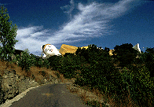 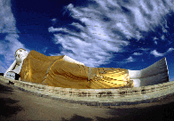
田舎道を走って行くとニュっと姿を現す巨大寝釈迦。
その時点では丘の上にコレだけがあるものだと思っていた。
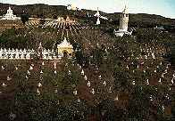
しかし敷地内に入って唖然。物凄く広いのだ。しかもただ広いだけではない。
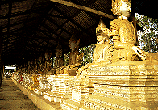 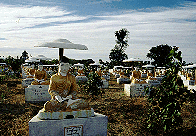 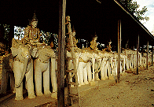
敷地内の大半をずら〜っと並んだ仏像が埋め尽くしているのだ。
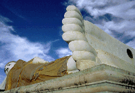 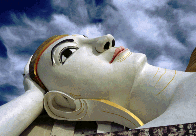
で、巨大寝釈迦像。でかい。100メートル位か。
「空ってなんで青いのかなあ」って顔して寝ている。
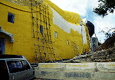
入り口はお尻から。ペンキ塗り、終ってねえぞ。
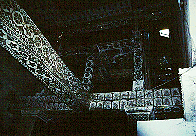
内部はコンクリートの梁が鏡のモザイクに覆われていて豪華、というかかなり無茶している。
足の裏の覗き窓なども両方付いているところを見ると、もともと2階建てのつもりで造ったのではなかろうか。
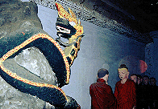
内部の展示はお釈迦様の一生シリーズ。
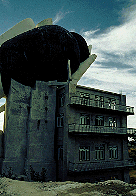
枕は4階建て。
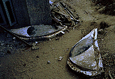
眼が落ちてますよ〜
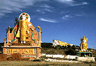 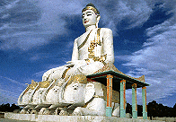 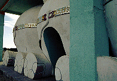
丘の下には大仏がウヨウヨ。
写真左の大仏さんは工事中。
象さんのお尻には入り口があったが中は真っ暗。
 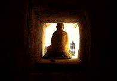
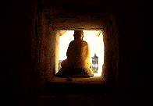
綺麗な円形の塔は内部が螺旋階段になっており、上まで登れる。
外壁には小さな窪みがたくさんあいておりその中に仏像が飾られている。
そのうちの幾つかは明り採りの窓にもなっている。
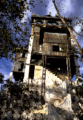 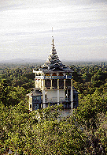 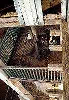
入り口付近に奇妙な塔があった。
基本的な形は5層（基段部を除く）の塔である。
これが東西北の3面に小部屋を無理矢理増築したため、相当怪しいプロポーションの塔になってしまっている。
あまりにも面白いので徹底解明して見よう！見たい人はここをクリック！
立体迷路のような怪建築である。
実際、面白がって何度も行ったり来たりしていたら、物売りの子供達が私が迷って外に出られなくなったのかと勘違いし、大勢で助けに来てくれた。
で、買わされたのがコレ。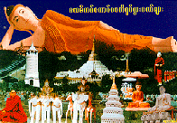
このパゴダの魅力を余すことなく伝えている力作である。
来た参拝客に満足してもらうためなら何でもする寺と見た。
仏像の数で満足させ、寝釈迦の大きさで満足させ、塔にはのぼらせる。
しかし、そのサービス満点具合はこの国のジュース同様、「甘過ぎてかえってノド渇く」というサービス過剰状態を引き起こす。
数と量で圧倒させるあまり有難味は薄くなり、かえってポンチなテイストを醸し出してしまっているのだ。
まさに珍寺の醍醐味なり。
次のスポットへGO！
ミャンマーパゴダ列伝のページへ
珍寺大道場
HOME